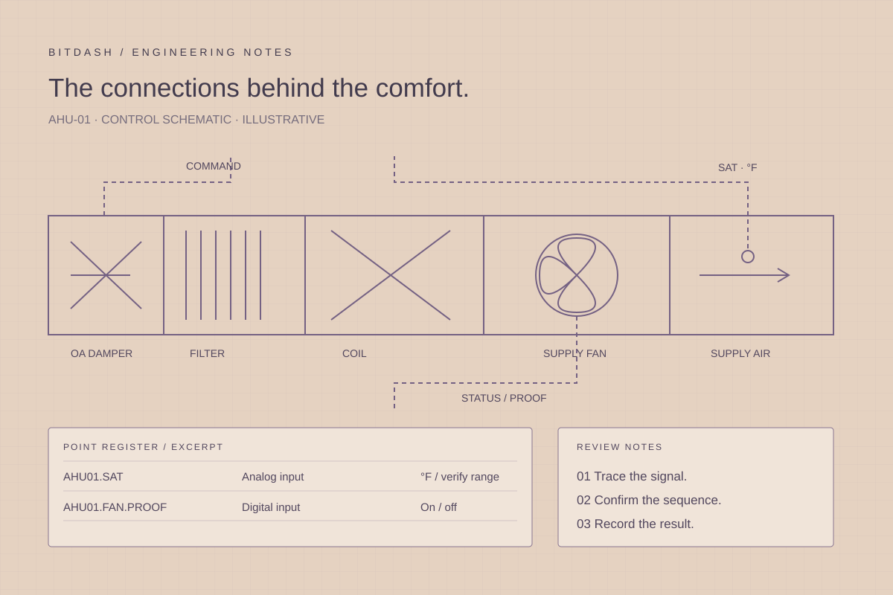

Start with the equipment.
Connect every detail.
Practical engineering review points for AHUs, VAVs, rooftop units, fan coils, boilers, chilled-water plants and meters.

Equipment-specific review points.
These are scoping and coordination references. Actual setpoints, delays, safety requirements and acceptance criteria come from the approved project documents and equipment requirements.
Air-handling units
Define the equipment
Start with the airflow path and the approved operating modes. Identify outdoor, return and exhaust dampers; filters; coils; fans; and the sensors used by each loop. Separate a fan command from proof of operation and a damper command from any available feedback.
Coordinate the work
Coordinate the equipment schematic, I/O schedule and sequence around occupied, unoccupied, warm-up and applicable economizer modes. Record which interlocks are hardwired, which are native equipment functions and which belong to the BAS application.
Build a useful point set
Supply, return and outdoor temperatures in °F; fan command and proof; damper position; coil demand; operating mode; relevant alarms.
Record verification
For an approved mode transition, record the precondition, command, observed proof and timing. Ask the local team to verify physical responses. Restore overrides and document exceptions before closing the test.
Explore the related service ↗VAV terminal units
Define the equipment
Confirm whether the terminal is cooling-only, reheat or fan-powered. Obtain design airflow values, sensor details and the approved occupancy and temperature-control sequence. A common graphic template should not conceal differences between terminal types.
Coordinate the work
Coordinate airflow measurement, minimum and maximum limits, damper control and reheat permissions. Distinguish the balancing contractor’s field measurements from the values available in the controller. Agree which parameters operators may adjust.
Build a useful point set
Zone temperature and setpoints in °F; airflow and airflow setpoint; damper command; reheat output; occupancy; available fan status.
Record verification
Review a representative zone through an approved demand change. Compare measured airflow with the local balancing record, verify the applicable limit and check reheat behavior against the sequence.
Explore the related service ↗Packaged rooftop units
Define the equipment
Obtain the manufacturer’s interface map and unit sequence before defining integration. Packaged equipment may retain staging, safeties and operating limits in its own controller. A network interface exposes only the documented points and permitted commands.
Coordinate the work
Map the requested supervisory functions: enable, occupancy, setpoint adjustment, mode, status and faults. Record scaling, enumerated states, command ownership and the expected behavior when communication is lost.
Build a useful point set
Unit enable and mode; supply and space temperatures in °F; stage status if exposed; alarm code; fan proof; communication quality.
Record verification
Compare representative values with the unit’s local display. Test only approved writes, confirm the resulting mode and record recovery after the agreed communication-loss check.
Explore the related service ↗Fan-coil units
Define the equipment
Identify two-pipe or four-pipe configuration, fan speeds or variable-speed control, valve arrangement and any condensate interlock. The controls package should reflect the actual installed terminal equipment.
Coordinate the work
Coordinate zone demand, fan operation and valve control with the design sequence. For seasonal changeover systems, identify the approved changeover source and prevent assumptions about heating or cooling availability.
Build a useful point set
Zone temperature and setpoint in °F; fan command/status where available; heating and cooling valve commands; changeover mode; condensate alarm.
Record verification
Observe an approved heating or cooling demand with the local team. Confirm the correct valve and fan response, applicable interlocks and restoration to automatic operation.
Explore the related service ↗Boiler plants
Define the equipment
Document boiler, pump and distribution relationships before defining supervisory staging. Obtain the manufacturer’s operating limits and identify the packaged controls and safety functions that remain authoritative.
Coordinate the work
Coordinate enable requests, available status, lead/lag intent, reset requests and the project’s proof requirements. Distinguish a BAS request from the equipment controller’s decision to operate.
Build a useful point set
Supply and return temperatures in °F; plant demand; boiler availability and status; pump command and proof; approved setpoint; fault indication.
Record verification
Use the approved procedure to observe demand, enable and proof in sequence. Record staging decisions and recovery behavior without treating a supervisory test as validation of combustion or equipment safeties.
Explore the related service ↗Chilled-water plants
Define the equipment
Map chillers, pumps, towers and bypasses along with the available flow, pressure, power and temperature measurements. Identify the local control and optimization boundaries before assigning changes to either layer.
Coordinate the work
Connect staging and reset intent to verified measurements and equipment constraints. Track sensor quality and timestamps before drawing conclusions from plant dashboards. Do not calculate a performance finding from unverified inputs.
Build a useful point set
Chilled-water supply/return temperatures in °F; flow; differential pressure; equipment status; power; approved setpoints and plant mode.
Record verification
Review one operating transition with the local team and correlate commands, proofs and plant measurements. For performance review, compare equivalent operating conditions and document measurement limitations.
Explore the related service ↗Meters and energy data
Define the equipment
Confirm the meter identity, measured quantity, engineering units and data source. Distinguish instantaneous demand from accumulated consumption. Record whether a value comes from a physical register, a pulse count or a calculation.
Coordinate the work
Document register mapping, scaling, timestamps and aggregation intervals. Plan how resets, rollovers, missing samples and replacement meters will be identified in the record. Keep billing and engineering-use requirements explicit.
Build a useful point set
Meter identifier; demand; accumulated consumption; unit multiplier; timestamp; quality; reset or replacement event where available.
Record verification
Compare the supervisory reading with the source meter and a known interval. Check the change in the cumulative value, flag gaps and retain the mapping revision with the validation record.
Explore the related service ↗Take the checklist into the review.
The downloadable reference brings the equipment context, point considerations and verification approach into one document. Add project identifiers, owners, revisions and evidence links before use.
Download the equipment reference (.txt) ↗Keep the engineering trail connected.
Equipment ID → drawing → point schedule → sequence → application → test evidence.
Connect the sequence to the test ↗